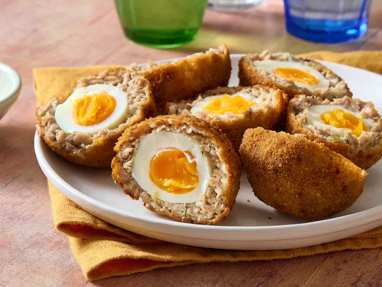
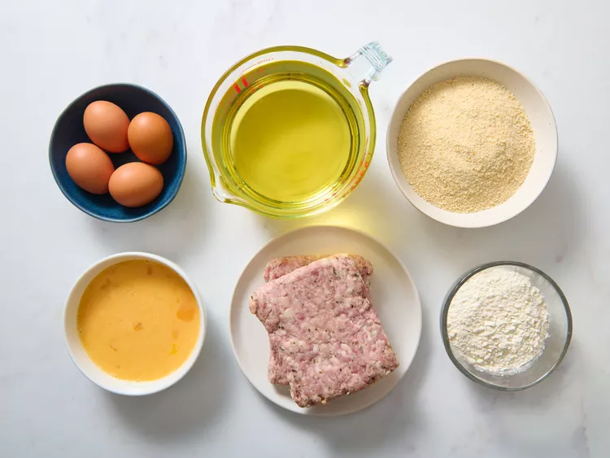
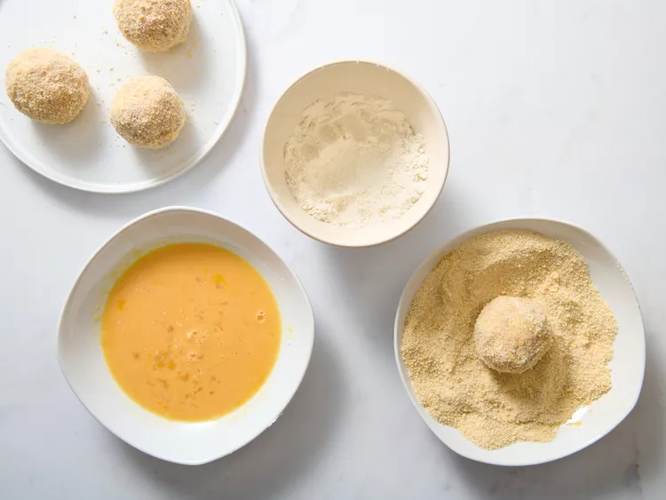
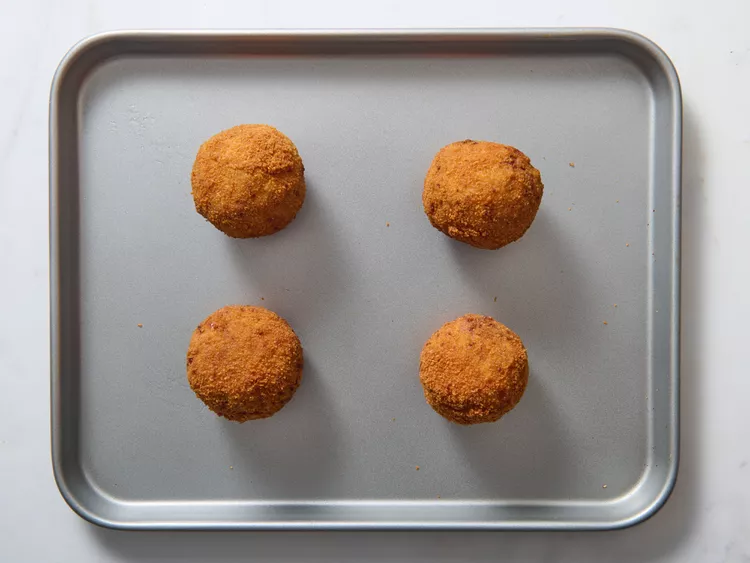
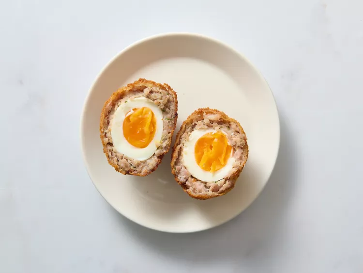

Home
Scotch eggs recipe

Description
Scotch eggs are soft-boiled eggs wrapped in sausage and bread crumbs, deep-fried for a delicious savory treat. They're a British pub favorite, perfect for family occasions or picnics.
Ingredients
- 1 quart oil for frying
- 4 large eggs
- 2 pounds bulk pork sausage
- 1 cup all-purpose flour
- 4 large eggs, beaten
- 4 cups dried bread crumbs, seasoned
Steps
For this recipe, we are essentially making a thick, meaty tomato sauce and layering that with noodles and cheese into a casserole. Here's the run-down:
- Gather all ingredients. Preheat the oven to 350 degrees F (175 degrees C). Heat oil in a deep-fryer to 375 degrees F (190 degrees C).

- Place eggs in a saucepan and cover with water. Bring to boil. Cover, remove from heat, and let eggs sit in hot water for 10 to 12 minutes. Remove from hot water, cool, and peel.
- Flatten sausage and make a patty to surround each egg.
- Very lightly flour the outer sausage layer then coat with beaten egg. Roll in bread crumbs to cover evenly.

- Deep-fry prepared eggs in hot oil until golden brown while making sure each side is well cooked.
- Bake in the preheated oven for 10 minutes.

- Cut in half and serve.

Hope you enjoy!